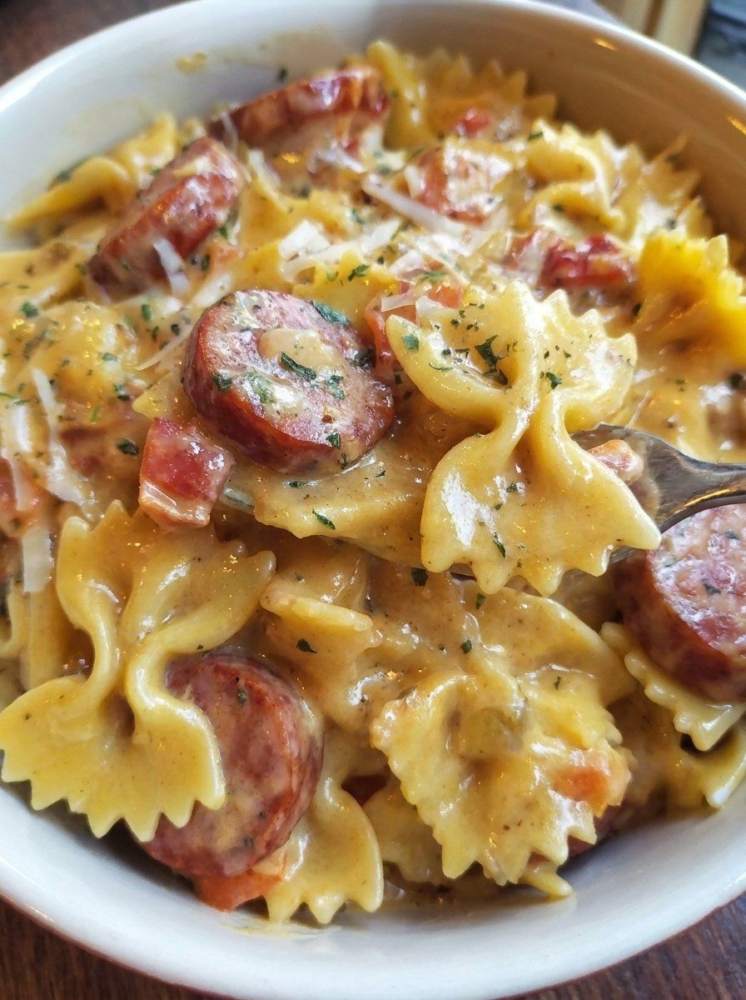

One Pot Smoked Sausage Pasta

- Meal
- Dinner
- Serves
- 6 (estimate; the source gives no yield, so the original amounts are kept)
- Protein
- smoked sausage
- Cook
- stovetop, one pot · ~10 min active / ~35 min total · easy
- Make-ahead / leftovers
- no / yes
- Mediterranean
- no
- WW tier
- heavy
- Status
- Trying out (probation)
Browned smoked-sausage rounds and onion, then whole wheat bow ties cooked right in broth, diced tomatoes and a little cream, finished with sharp cheddar. One pot. Not Sheet-Pan Sausage & Peppers and not Sausage & Fried Potatoes.
Ingredients
Original amounts from the post (no yield stated). Kitchen estimate: 2 lb sausage + 8 oz pasta feeds the household of 6, so nothing is scaled.
- 3 tablespoons olive oil
- 2 pounds smoked sausage, sliced into bite-sized pieces (about ¼-inch rounds)
- 1 medium yellow onion, chopped
- 3 cloves garlic, minced
- 2 cups chicken broth
- 1 can (12 oz) diced tomatoes, undrained (a standard 14.5-oz can is fine)
- ½ cup heavy cream
- ¼ teaspoon freshly ground black pepper
- 8 oz dry whole wheat bow tie pasta (or other small pasta shape)
- 2 cups sharp cheddar cheese, shredded (divided)
Method
Source method (Recipes by Clare).
- Prep the sausage: slice into bite-sized rounds, about ¼ inch thick.
- Sauté the base: heat the olive oil in a large pot or Dutch oven over medium. Add the onion and sausage; cook until the onion softens and the sausage browns, 5–7 minutes.
- Garlic: stir in the garlic for about 30 seconds until fragrant (don't let it burn).
- Sauce base: add the broth, the tomatoes with their juice, the cream and the pepper. Stir to combine.
- Pasta: add the dry pasta and stir it under the liquid; add a splash more broth if any is uncovered.
- Simmer: cover and simmer 15–20 minutes, stirring occasionally so it doesn't stick, until the pasta is tender and most of the liquid is absorbed.
- Cheese: off the heat, stir in 1 cup of the cheddar until melted and creamy.
- Serve hot, topped with the remaining cheddar if you like.
Notes
- Servings: the post gives no yield. Serving count of 6 is Kitchen's estimate; amounts are the source's, unscaled. The source is sausage-heavy (2 lb) and pasta-light (8 oz); add a bag of salad or green beans on the side.
- Processed meat: smoked sausage is the main — counts toward the ≤2 red/processed-meat cap. Turkey or chicken smoked sausage works and is lighter, but is still processed meat.
- WW tier heavy: processed sausage + cream + 2 cups cheddar.
- Mediterranean ✗: olive oil ✓ and whole wheat pasta ✓, but processed meat and almost no vegetables (2 of 4).
- Tomato: diced tomatoes simmered in the sauce — counts toward the weekly cooked-tomato target (a light dose).
- Legumes / fish: none.
- a fish-free plate / hidden fish: no fish or shellfish in the recipe, so no swap needed. Check the smoked sausage and chicken broth labels for anchovy/fish sauce if a brand is unfamiliar.
- Nutrition: not given by the source; none listed here.
Source: Recipes by Clare (@recipesbyclare), via X: https://x.com/recipesbyclare/status/2116168771702268259